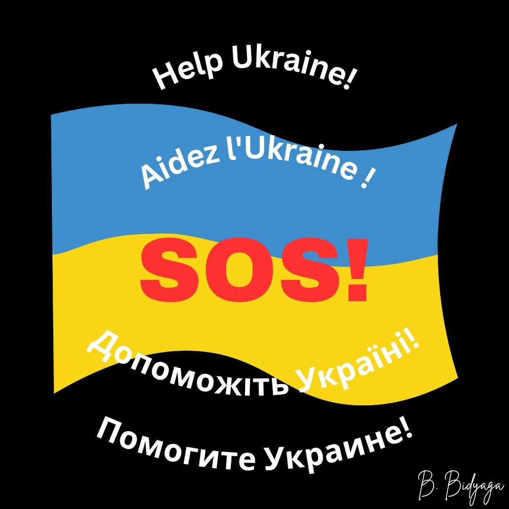

1. UNBROKEN (Незламні)
Prosthetics, rehabilitation, and psychological support for military and civilians injured in the war.
Website: https://unbroken.org.ua
Donations: https://unbroken.org.ua/donate
2. SavED
Restoration of schools and kindergartens in de-occupied territories.
Website: https://saved.foundation
Donations: https://saved.foundation/?payment=general
3. UNITED24 (Official platform of the President of Ukraine)
Demining, medical aid, reconstruction of housing, schools, hospitals.
Website: https://u24.gov.ua
Donations: https://u24.gov.ua/donate
4. Razom for Ukraine
Medical care, rehabilitation and prosthetics for the wounded, aid for displaced persons and refugees.
Website: https://www.razomforukraine.org/
Donations: https://www.razomforukraine.org/donate-to-ukraine/
5. Come Back Alive
High-tech equipment for the Armed Forces of Ukraine: drones, vehicles, surveillance systems, and communication means. Training for Ukrainian military personnel.
Website: https://savelife.in.ua/
Donate: https://savelife.in.ua/en/donate-en/#donate-army-card-once
6. Ukraine Reconstruction Fund
Long-term reconstruction of destroyed infrastructure: housing, hospitals, schools, energy.
Website: https://ukrainereconstructionfund.org/
Donate: https://ukrainereconstructionfund.org/donate-now/
7. Return to Life
Extensive humanitarian aid for victims: internally displaced persons, children, families of the fallen.
Website: https://returntolife.org.ua/
Donate: https://returntolife.org.ua/donate/
8. Serhiy Prytula Foundation
Aid across multiple areas: from tactical equipment and vehicles for the Armed Forces of Ukraine to large-scale humanitarian aid for civilians.
Website: https://prytulafoundation.org/
Donate: https://prytulafoundation.org/